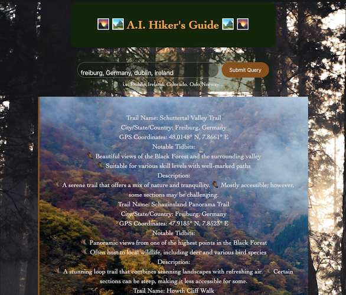
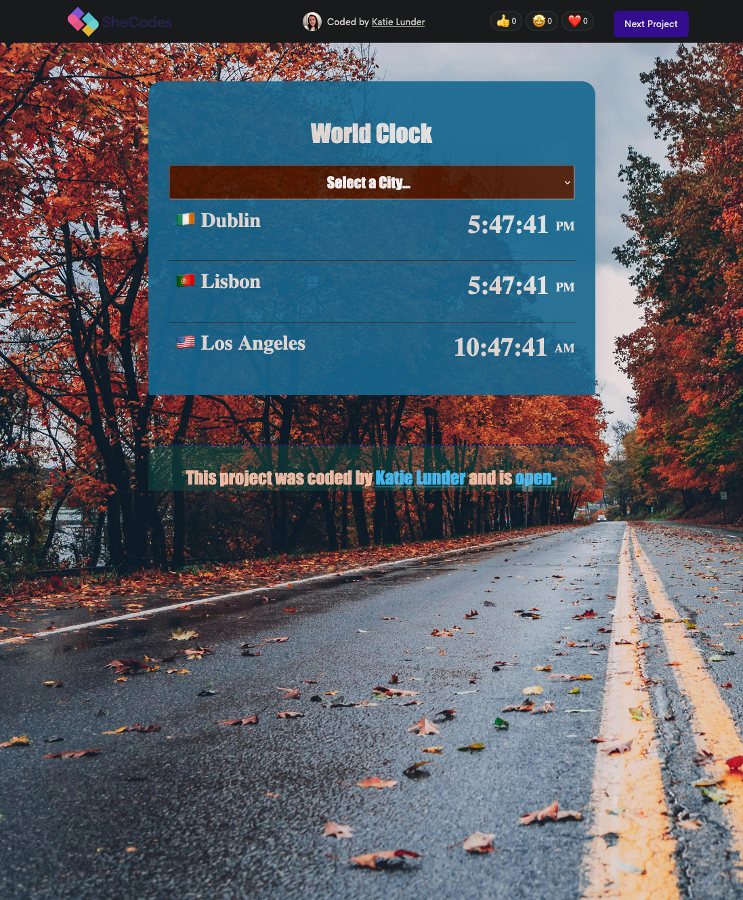
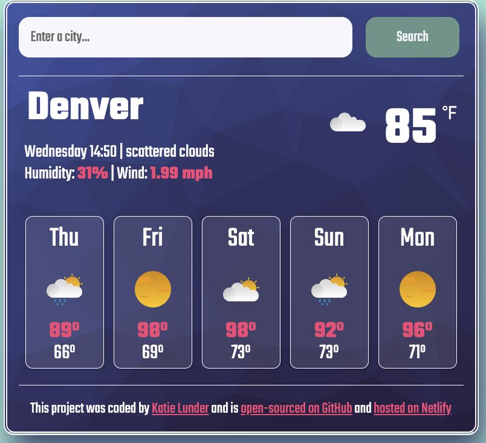
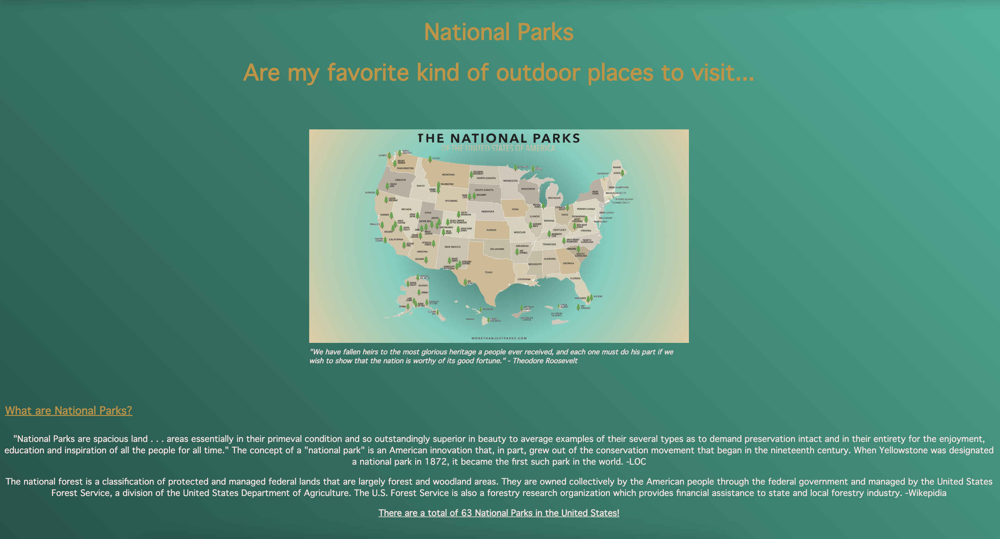

Gardening page
A second SheCodes build, extending the same fundamentals with more interactive elements.
View the projectHello, I am
Applications I have built, mostly to solve problems I actually had. Each one is live, so click through and try it.

Enter a location and the app calls an external AI API to generate a hiking guide for that area. Built for planning trails around Gunnison, Colorado, where I have spent a lot of time. Handles the API request, the wait state and the rendered response.
View the app
A live multi-timezone clock. Select a city and the time updates in real time. The city list is my own geography: Dublin, Oslo, Lisbon, Denver, Tokyo, London. Timezone handling, DOM updates and a reset function, all without a page refresh.
View the app
Search any city and get current conditions plus a five day forecast, pulled live from a weather API. Parses the API response and lays it out responsively so it works properly on a phone.
View the app
An early build from my SheCodes coursework, focused on layout, semantic HTML and responsive styling.
View the project
A second SheCodes build, extending the same fundamentals with more interactive elements.
View the project